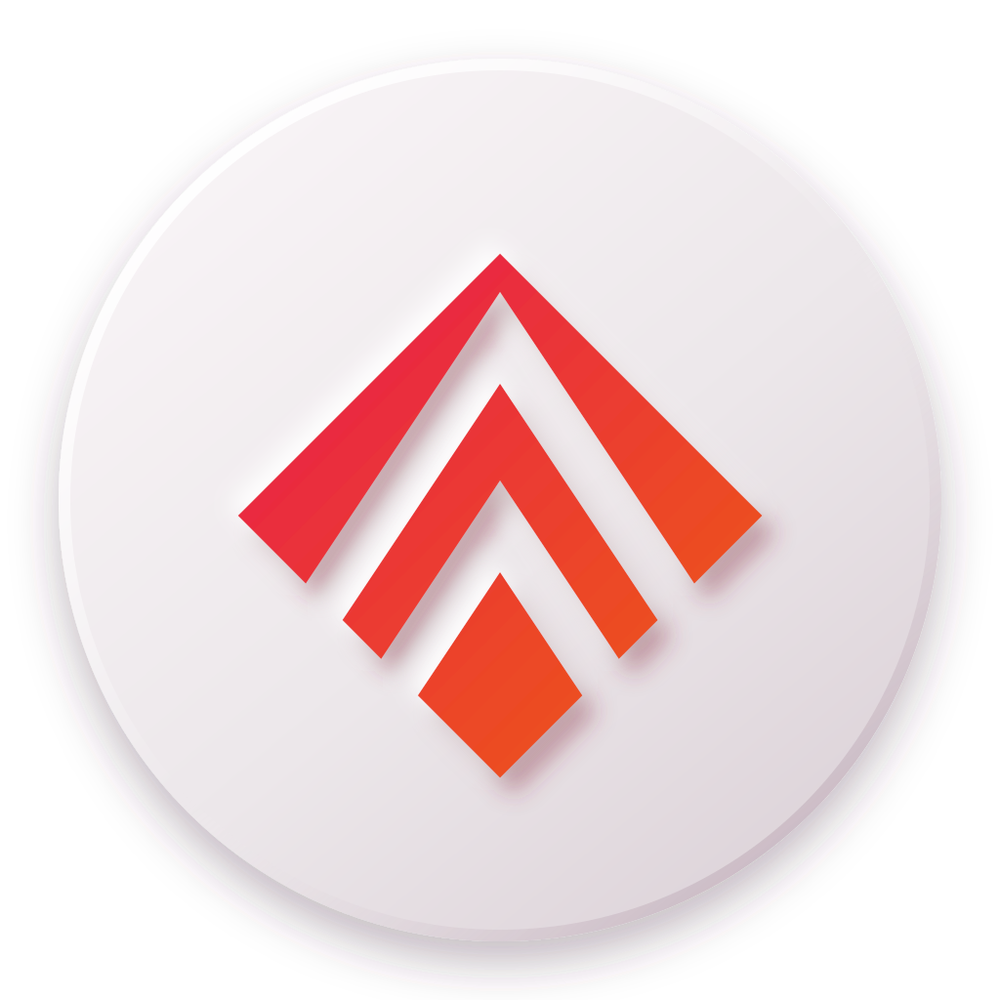

ScrollSync
Hands-free scrolling, timed clicks,
and gamepad control for the web.
What it does
- ScrollSteady auto-scroll up or down, with sideways pages handled for you.
- Auto PulseTimed clicks on the biggest image, for galleries and comics.
- PadScroll and click with a gamepad stick and buttons.
- Floating hubA draggable on-page puck: tap for the panel, right-click or long-press for quick actions.